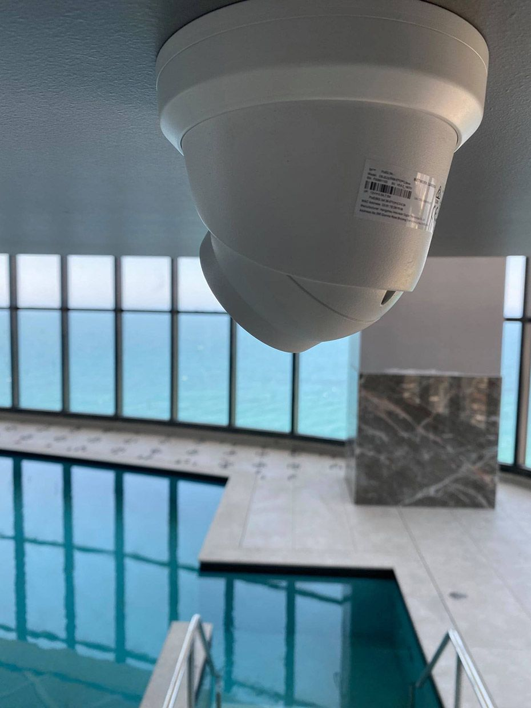
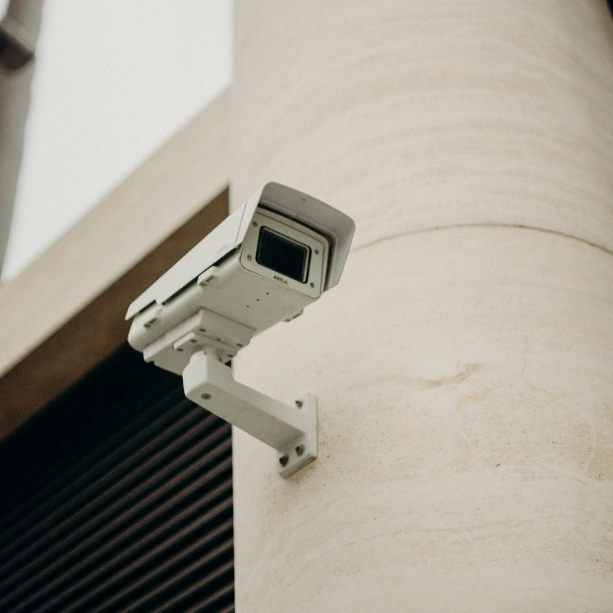
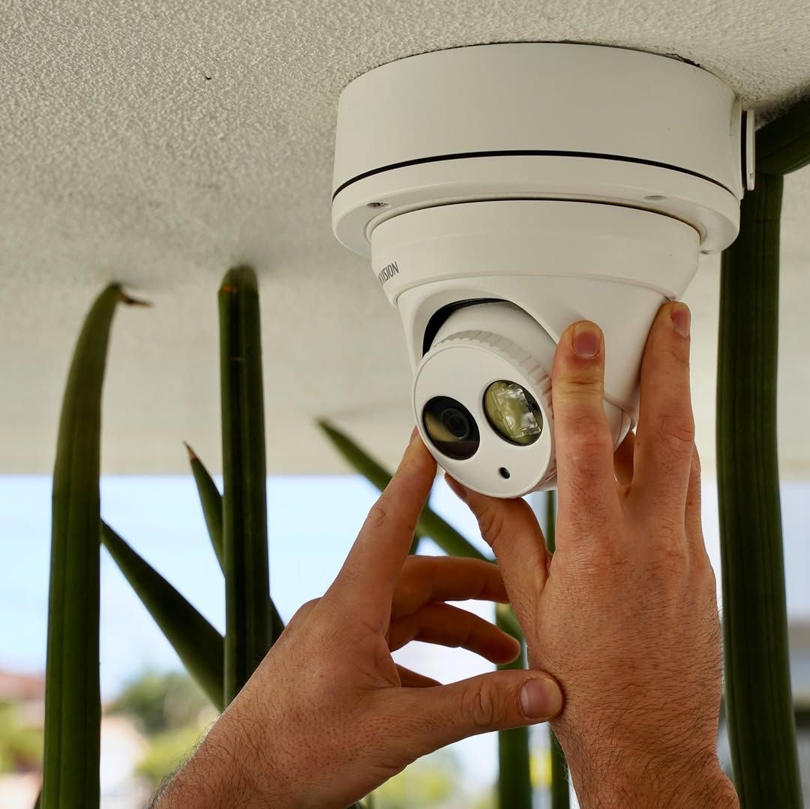

On this page
AT A GLANCE
At SPL Security Solutions, we offer a comprehensive range of security cameras designed to safeguard properties in Bundall.
Get A Free Quote Now!
Thank you for contacting SPL Security Solutions.
We will be in touch soon.

Security Cameras Bundall
At SPL Security Solutions, we offer a comprehensive range of security cameras designed to safeguard properties in Bundall. Our indoor cameras can monitor key areas like entryways, offices, and high-traffic zones, helping to protect your valuables and oversee activity. Outdoor cameras are built to withstand harsh weather, providing clear, high-quality footage to deter intruders and document incidents.
We provide both wired and wireless options tailored to your specific needs, whether for a single home system or a complex multi-camera setup for businesses. Featuring high-definition recording and remote access, our solutions integrate seamlessly into your existing security infrastructure.
Call us on (07) 5588 8111 to find the best security camera system for your property in Bundall.
Residents in Bundall can rely on our expert locksmith and hardware services to enhance their home’s safety. From durable lock upgrades to emergency assistance, we provide comprehensive solutions to secure your property.
Bundall businesses benefit from tailored security systems that safeguard assets and improve efficiency. From high-security locks to advanced access control systems, we deliver everything needed to protect commercial properties.
Our automotive locksmith services in Bundall offer quick and reliable solutions for car key replacements, lock repairs and ignition issues. Whether locked out or needing a transponder key programmed, we ensure your vehicle remains secure and operational.
Restricted key systems in Bundall prevent unauthorised duplication, giving you complete control over access to sensitive areas. These systems are ideal for homes, offices and businesses needing enhanced access management.
Protect your valuables in Bundall with robust safes designed to resist theft, fire and water damage. We offer complete support, including installation and maintenance, to ensure your safe remains secure.
We design advanced security systems for Bundall properties, integrating CCTV cameras, alarms and access control. These tailored systems deliver full coverage and enhanced protection for homes and businesses.
Enhance your property’s security in Bundall with dependable lock hardware. From traditional locks to advanced locking mechanisms, we offer solutions that ensure safety and peace of mind.
Our door hardware combines functionality and style, offering handles, hinges and closers that enhance the security and appearance of any property. Designed for long-term durability, these components suit both residential and commercial needs in Bundall.
We supply architectural door hardware that blends function and style, including fire-rated components, smooth door closers, and elegant handles for both traditional and modern spaces in Bundall.
Benefits of Security Cameras in Bundall
Security cameras deliver reliable protection and peace of mind, offering a whole host of advantages for properties in Bundall:
- Crime Deterrence
Cameras act as a visible deterrent, reducing the chances of theft or vandalism by discouraging intruders. - Evidence Collection
High-quality footage provides valuable evidence for legal disputes or investigations, ensuring incidents are properly documented. - Remote Access
Modern systems allow you to monitor your property in real-time or review footage from anywhere using your smartphone or computer. - Safety Enhancement
Cameras help identify risks and hazards early, improving security and preventing potential issues. - Cost Efficiency
By reducing losses from theft and lowering insurance premiums, security cameras are a cost-effective investment.

Contact Details
24/7 Emergency Locksmiths or Security Tech


Trading Hours
Retail Shop

Frequently Asked Questions
-
What type of security camera is best for outdoor use?
Outdoor cameras should be weatherproof and feature night vision or low-light technology for clear footage in various conditions. Look for cameras with a high IP rating to ensure durability.
-
Can I access my security cameras remotely?
Yes, most modern security cameras come with remote access capabilities through dedicated apps or web platforms. You can monitor live footage or review recordings from anywhere using your device.
Locksmith & Security Solutions Gold Coast, Brisbane & Northern NSW